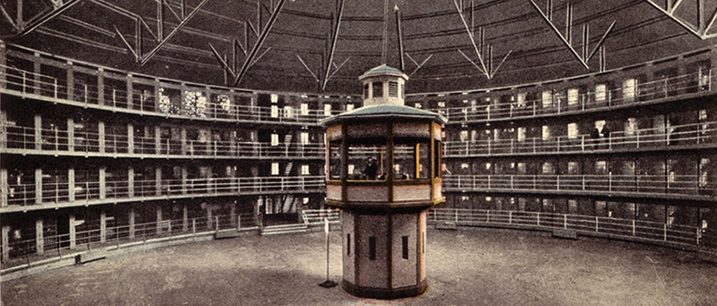
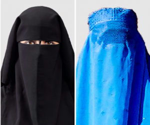

A panopticon
The Panopticon describes a theoretical model of a prison with cells that were visible from a centralized tower. Here, a person in a cell cannot interact with other prisoners and is constantly visible to the central tower.
The panoptic model of observation is diffused throughout society through cellular phones, telephones, social security numbers, ATMs, passwords for any type of machine, credit cards, Internet access, and an increasing number of surveillance cameras in public and private spaces that track and record actions of people and can be used to follow movements of a person throughout the day.
The Canadian human rights code is patterned after the United Nations Universal Declaration of Human Rights. It includes rights such as the right to life, liberty, and the security of the person, the right to not be kept in slavery for any reason, and the right to be represented by the law.

According to Immigration Minister Jason Kennedy, “Allowing a group to hide their faces while they are becoming members of our community is counter to Canada’s commitment to openness, equality, and social cohesion.” Women on the other hand can vote without showing their faces and have the option to show their faces to a female security officer only.
In Ontario, the Human Rights Code was penned in the mid-1940s. It prohibits discrimination in the areas of goods and facilities, services, housing, employment, contracts, and membership in associations or trade unions, based on ancestry, place of origin, race, ethnic origin, creed, sexual orientation, age, citizenship, marital status, receipt of assistance, and disability.
The Code is quasi-constitutional - it is not a constitutional law but is treated like one - and has primacy over most laws in Ontario. It is not meant to be a punitive tool, but financial compensation and changes in practice are applied to perpetrators.
True or False
True or False
True or False
True or False
True or False